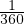

Ringjoon
|
|
 | Ringjoon |
|
|
| |
Ringjoone kaareks nimetatakse ringjoone osa tema kahe punkti vahel koos nende
punktidega.
Kõõluks nimetatakse ringjoone mingit kahte punkti ühendavat lõiku.
Kaarekraadiks nimetatakse  ringjoonest.
Kesknurgaks nimetatakse nurka, mille tipp asub ringjoone keskpunktis, teisiti
öeldes on see nurk, mille moodustavad kaks ringjoone raadiust.
Piirdenurgaks nimetatakse nurka, mis on moodustatud kahe ühise otspunktiga
kõõlu poolt.
Ringjoone lõikajaks nimetatakse sirget, millel on ringjoonega kaks ühist
punkti.
Ringjoone puutujaks nimetatakse sirget, millel on ringjoonega üks ühine
punkt.
Ringjoone omadusi:
- π ≈ 3.14
- ringjoone ümbermõõt on võrdne 2 ⋅ π ⋅ r = π ⋅ d, kus r on raadius ja d on
diameeter
- pi on ringjoone ümbermõõdu ja diagonaali suhe
- Thales’i teoreem: diameetrile toetuv nurk on täisnurk